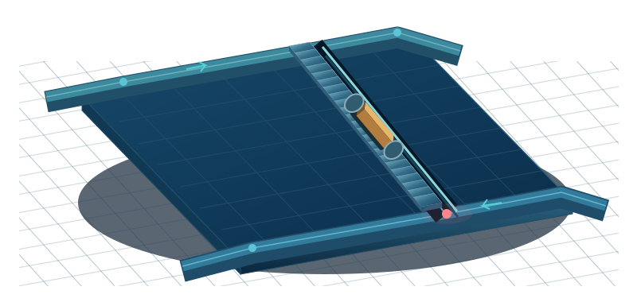

安全监测/
31002 工作面
2022-04-07 08:40:00
T0 当前浓度 超限
0.86%CH₄08:39:55 更新
进行中预警
1条红色 1 条
待处理事件
2项待确认 1 · 待复核 1
专业预测
未就绪等待模型产物
监测点位
%CH₄工作面监测
31002
31002 工作面
进风巷
回风巷
采煤机
数据质量
有效记录占比99.96%
有效记录770,598
异常记录332
源文件校验已通过
单位核对待确认
浓度分析
T0 实测报警值 0.80%近 60 分钟
智能研判
T0 甲烷浓度超限08:32:48 起 · EV-0407-01
红色预警记录
近 24 小时| 发生时间 | 测点 | 预警类型 | 等级 | 峰值 / % | 质量标记 | 处置状态 | 操作 |
|---|